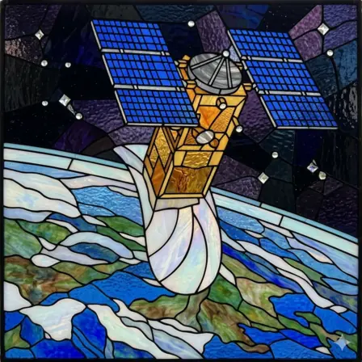
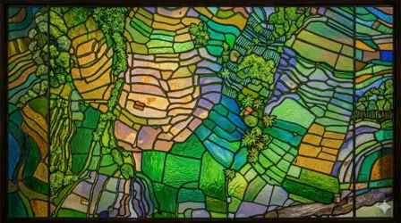

Vật lý thiên văn và vũ trụ học
Từ quan sát đa bước sóng đến các câu hỏi lớn về cấu trúc, lịch sử và tương lai của vũ trụ.
Đọc trang giới thiệuTừ quan sát đa bước sóng đến các câu hỏi lớn về cấu trúc, lịch sử và tương lai của vũ trụ.
Đọc trang giới thiệu
Thiết kế, vận hành và khai thác hệ thống vệ tinh phục vụ khoa học, quan sát Trái Đất và ứng dụng không gian.
Đọc trang giới thiệu
Thu nhận và phân tích dữ liệu vệ tinh, ảnh không gian và dữ liệu địa lý để hiểu các hệ thống trên Trái Đất.
Đọc trang giới thiệuNghiên cứu môi trường plasma, gió Mặt Trời, từ quyển, tầng điện ly và các hiện tượng thời tiết không gian.
Đọc trang giới thiệuSpace-Verse chỉ hiển thị các trang đã có nội dung định hướng cơ bản. Các chủ đề mới sẽ được bổ sung sau khi tài liệu giới thiệu đã sẵn sàng.